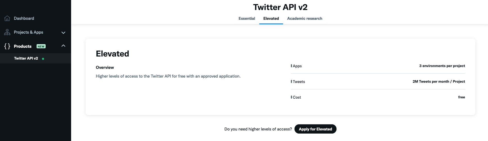
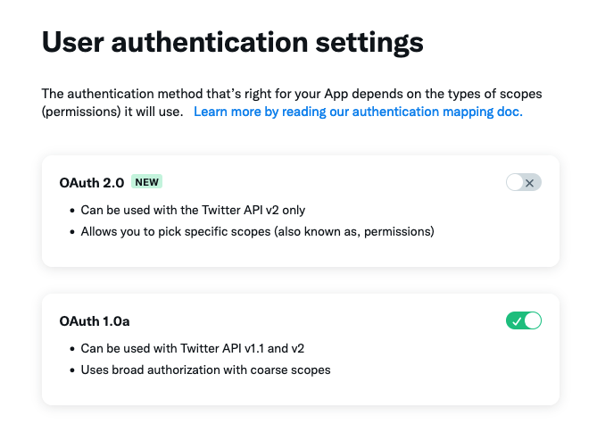
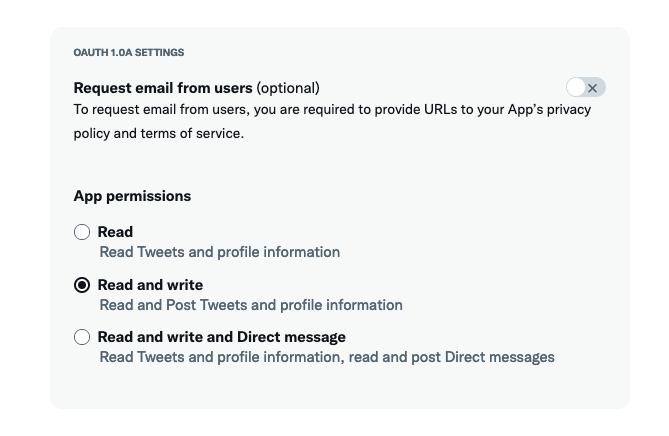
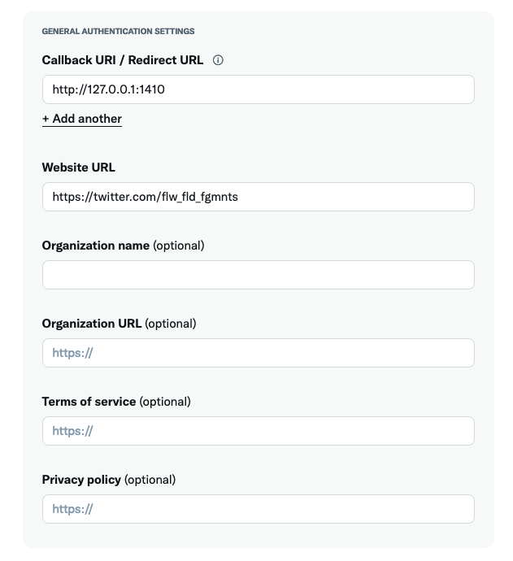
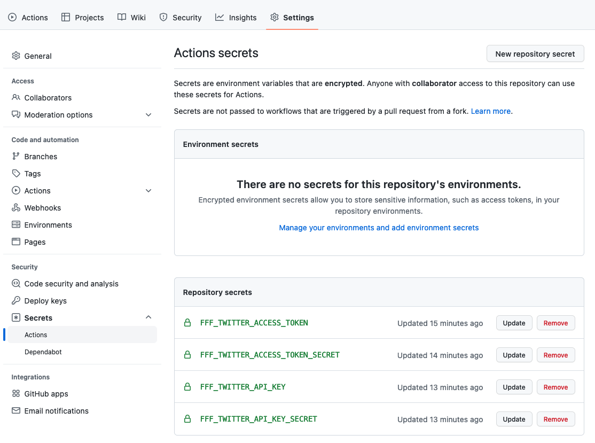
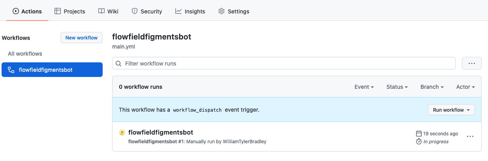

Introduction
This blog post covers my experience making a generative art Twitter bot with GitHub Actions and R. You can click here or on the image above to see it. I’ve thought about building an automated daily-ish thing to produce generative art, but I wanted something free/low cost, simple, and easily shared. I’ve seen several Twitter bots from R code for a platform, and Github Actions provides a great engine. So all the pieces can go together nicely.
This blog post is half tutorial/half list of mistakes I made and had to fix. So, it’s a little awkward. While you’re creating your work, I’d love for you to write better notes than this post and put them on your blog.
Speaking of other blog posts, the following posts helped me a ton. I’d highly recommend reading through them before this one. I’ll reference them throughout this piece.
Matt Dray’s “A Twitter bot with {rtweet} and GitHub Actions” post
Oscar Baruffa’s “Tips for building a Twitter bot with R and Github Actions” post
There are three pieces to making this work: R art code, a Twitter account, and setting up the GitHub Action. I’ll write about them in turn, and by the end, it’ll all work. I assume you’re familiar with Twitter terminology (tweet, post, etc.), have a GitHub account, and know how to push code to it.
R art code
You’ll need some R code that creates an output file for the art. This can be a simple script or a set of functions. Danielle Navarro and Thomas Lin Pedersen are great resources if you need some help.
There are several options for the output files’ format. I used png for images and mp4 for animation. I initially used gifs for animation, but posting to Twitter sometimes made it look terrible. Many others have complained about this, so I encourage you to use an mp4 instead of a gif. You’ll want to double-check the options for Twitter and rtweet before writing the code. I use temporary files for the output, but you can save them somewhere. See John D. Johnson’s post for an example of saving a new image daily. (Note: you might need to update the rtweet package to post mp4. See this conversation.)
If you’ve never made an R package, a generative art one is a great place to start.
It’s low stakes. If your math is wrong, but the image looks good, it’s totally fine. You don’t have to do intense testing or submit to CRAN. You can cut corners, and everything’s good as long as it runs.
You’ll actually learn about package development. Unfortunately, copy-pasting code from a small “Hello World” example won’t teach you a lot about creating an R package. This project will probably cover dependencies, output files, and set up for automation. You can also create a website, hex-sticker, and documentation.
It’s your special baby. No one else has the same project as you. It’s not like every other student in a class has a 99% copy. It’s fun because it’s definitely yours.
If you have your art code in a separate file or package, you’ll need to write a code file to create the actual output. This file will probably include the code to post to Twitter.
If you’re using randomness generated from R, it’s good practice to set the seed (using set.seed or other capabilities). I used the current date in the “%Y%m%d” format for the seed (ex: 20220817). Then, if something breaks or looks bad, I can always recreate what happened because I have the seed saved.
You also might need to choose other parameters for your code. I used the date here, too but took modulo of the day of the year to loop through the options. For example, August 17, 2022, is the 229th day. Taking mod 2 of this number and adding one will flip between 1 and 2 as the date increases. This setup can be used to flip between two options. I had three sets of options: layout (three levels), colors (two levels), and output format (five levels). By using modulo, I can flip through all 30 options in order.
At this point, you should have code to produce your generative art into an output file. If you have the skills to do this, you have the skills to finish out the rest. The R code is the hardest part.
Twitter Account
I list creating the Twitter account as the second step. However, doing this first can help match all the names. I created the package as “flowfieldfigments” and later found out Twitter usernames cannot be longer than 15 characters. That’s why the Twitter account is “flw_fld_fgmnts” instead.
I had to log out of my other account to sign up for a new one. The process was pretty easy after that.
I used Oscar Baruffa’s trick of adding “+something” to the end of my normal Gmail account. So instead of “gmailaccount.gmail.com”, I have “gmailaccount+twitterbot01.gmail.com”. This setup sent all the emails to the usual account without any issues.
You’ll need to add your phone number. I had an issue where I couldn’t use my usual phone number because it was associated with another account. So I had to take my number off my first account, use it for the new one, then, later on, take it off the new one, and add it back to the old one. You don’t have to add it back to the old one, but you’ll only receive texts for the associated account.
To build out a bot, you’ll need to sign up for a Developer Account. Then, you’ll need to fill out all the information according to your situation.
After creating the account, on the Developer Portal, you’ll need to apply for Elevated access. It says this can take a while, but it was under a minute for me. (If you don’t do this, you’ll end up with an error message like: “You currently have Essential access, which includes access to Twitter API v2 endpoints only. If you need access to this endpoint, you’ll need to apply for Elevated access via the Developer Portal. You can learn more here”.)

You’ll also need to set up your user authentication settings.



For this next section, we’ll test posting tweets using R code. This will involve using keys to your account. After testing, you’ll move them to an appropriate location, but until then, don’t push any of this code to GitHub. You can find them on the Developer Portal under your Project, under “Keys and tokens”, then “Regenerate” under “API Key and Secret” and “Access Token and Secret”. Copy these into an R file like the following one.
# Set up rtweet
library(rtweet)
vignette("auth", package = "rtweet")
auth <- rtweet::rtweet_bot(api_key = "longstringofLETTERS&numbers",
api_secret = "SECONDlongstringofLETTERS&numbers",
access_token = "THIRDlongstringofLETTERS&numbers",
access_secret = "FOURTHlongstringofLETTERS&numbers")
rtweet::post_tweet(status = "This is a test tweet."
token = auth)Hopefully, if I’ve written everything correctly and you followed it accordingly, you should have a tweet on your bot’s account saying, “This is a test tweet.” after you run that code.
Now you can add your generative art. The following is the base code I used. For media, you’ll need to add alt text. For subsequent tweets, the status will have to change. I generate mine, so it changes every day. I saved this as “tweet_art.R”.
library(rtweet)
auth <- rtweet::rtweet_bot(api_key = "longstringofLETTERS&numbers",
api_secret = "SECONDlongstringofLETTERS&numbers",
access_token = "THIRDlongstringofLETTERS&numbers",
access_secret = "FOURTHlongstringofLETTERS&numbers")
# Generative art code
library(flowfieldfigments)
set.seed(as.numeric(format(Sys.Date(),"%Y%m%d")))
day <- as.numeric(strftime(Sys.Date(), format = "%j")) + 1
seeds <- sample(1:10000, 3)
size <- sample(seq(50, 1500), 1)
anchor_layout <- c("random", "spiral", "grid")[day %% 3 + 1]
color_scheme <- c("full", "subset")[day %% 2 + 1]
color_subset_center <- runif(1, 0, 360)
color_subset_width <- runif(1, 30, 90)
hue_turn <- runif(1, 0, 360)
alpha_taper <- c("start", "end", "both")[day %% 3 + 1]
# I used a temp file, but you can save and pull it instead
output_file <- tempfile(fileext = ".png")
flowfieldfigments::create_png(seeds = seeds,
size = size,
anchor_layout = anchor_layout,
hue_turn = hue_turn,
color_scheme = color_scheme,
color_subset_center = color_subset_center,
color_subset_width = color_subset_width,
alpha_taper = alpha_taper,
output_file = output_file)
status <- paste0("set.seed(", seed, ")")
alt_text <- "Generative art featuring flow fields. Paths are various colors on a white background."
rtweet::post_tweet(status = status,
media = output_file,
token = auth,
media_alt_text = alt_text)At this point, you should be able to post your generative art to your bot’s Twitter account. You’ll want to try out a lot of the options to make sure your output looks good. I’ve noticed videos can be grainy, but refreshing the page can fix it.
GitHub
For the rest of the work, you’ll automate the process using GitHub Actions. To do this, you’ll have to push all your code/setup onto GitHub’s computers and tell them to run it.
To get GitHub to run everything, you’ll need to give:
Keys to your Twitter account
A file for setting up what you need to run the code file
A code file to run
You’ll need to create a blank GitHub repository or one based on the R project you’re using (but make sure NOT to push up the code file with your Twitter keys!).
Keys to your Twitter account
To give your bot’s keys to GitHub, you’ll save the “longstringofLETTERS&numbers” from your R code to GitHub Actions secrets. These are under your repo’s “Settings” on the top ribbon, then under “Security” on the left side panel, then “Secrets”, then “Actions”. You’ll add a new repository secret (click “New Repository Secret) for each of the rtweet::rtweet_bot’s parameters (api_key, api_secret, access_token, and access_secret). I added a prefix to each of the names with the appropriate title. This way, I can use similar names for other Twitter bots. The”longstringofLETTERS&numbers” goes in the “Secret*” box. Make sure you don’t add any whitespace to the front or back.

Now, go back to the code file and update it to use the GitHub Secrets. All you have to do is replace the “longstringofLETTERS&numbers” with “Sys.getenv(”SecretName”)“.
You should be able to test it out with a small test file like this one (or just cut straight to your main file). I found running a small test file was way easier to debug. So, that’s what I recommend. Save this as “test.R” or something.
#...
auth <- rtweet::rtweet_bot(
api_key = Sys.getenv("FFF_TWITTER_API_KEY"),
api_secret = Sys.getenv("FFF_TWITTER_API_KEY_SECRET"),
access_token = Sys.getenv("FFF_TWITTER_ACCESS_TOKEN"),
access_secret = Sys.getenv("FFF_TWITTER_ACCESS_TOKEN_SECRET")
)
rtweet::post_tweet(status = "This is a test tweet again.",
token = auth)A file for setting up what you need to run the code file
Now you’re going to set up the file for using GitHub Actions. I went to “Actions” under the repo’s top ribbon, then used the “Set up workflow yourself” option. You’ll want to create a file like this one:
name: flowfieldfigmentsbot
on:
workflow_dispatch:
jobs:
flowfieldsfigmentbot-post:
runs-on: macOS-latest
env:
GITHUB_PAT: ${{ secrets.GITHUB_TOKEN }}
FFF_TWITTER_API_KEY: ${{ secrets.FFF_TWITTER_API_KEY }}
FFF_TWITTER_API_KEY_SECRET: ${{ secrets.FFF_TWITTER_API_KEY_SECRET }}
FFF_TWITTER_ACCESS_TOKEN: ${{ secrets.FFF_TWITTER_ACCESS_TOKEN }}
FFF_TWITTER_ACCESS_TOKEN_SECRET: ${{ secrets.FFF_TWITTER_ACCESS_TOKEN_SECRET }}
steps:
- uses: actions/checkout@main
- uses: r-lib/actions/setup-r@v2
- name: Install rtweet package
run: Rscript -e 'install.packages("rtweet", dependencies = TRUE)'
- name: Create and post tweet
run: Rscript test.R(You might have to pull the changes into your local repo, add the file, then push it up, but I can’t remember exactly. Somehow you need to end up with a similar file in your repo, under the .github/workflows folder.)
I named this file “main.yml”. The name of the workflow is “flowfieldfigmentsbot”. The on: workflow_dispatch: allows you to click a button to run. We’ll update this to run on a schedule later.
I used macOS-latest for the environment because I developed it on a mac. Feel free to change the runner image.
The env: information must match what you saved in the GitHub Secrets AND what you wrote in the “test.R” file for the part before the colon. GitHub accesses your Twitter account keys and passes them to R using these lines. I named mine the same for both parts for simplicity, but that’s not required.
The steps: section accesses the repo, sets up R, installs rtweet, and runs the code in “test.R”.
To test everything, under “Actions” there should be an option under “Workflows” for your code. Click “Run workflow” to get it started. Sometimes it takes a few minutes. So make sure to chill out a second instead of clicking it a bunch of times.

Your bot’s Twitter account should have a new “This is a test tweet again.” tweet. If you try this again without changing the message, you’ll probably get an error about creating tweets with the same status in a row.
If you get a “Could not authenticate you.” error code 32 message, you missed adding the “GITHUB_PAT: ${{ secrets.GITHUB_TOKEN }}” line.
A code file to run
Now, you need to add the generative art piece back. For this example, I added devtools to install the package from GitHub. This way, GitHub has access to the generative art code. If you’re using a script instead, you can copy-paste in the code, source it, or run it in this file.
library(rtweet)
library(devtools)
devtools::install_github("WilliamTylerBradley/flowfieldfigments")
library(flowfieldfigments)
auth <- rtweet::rtweet_bot(
api_key = Sys.getenv("FFF_TWITTER_API_KEY"),
api_secret = Sys.getenv("FFF_TWITTER_API_KEY_SECRET"),
access_token = Sys.getenv("FFF_TWITTER_ACCESS_TOKEN"),
access_secret = Sys.getenv("FFF_TWITTER_ACCESS_TOKEN_SECRET")
)
seed <- as.numeric(format(Sys.Date(),"%Y%m%d"))
set.seed(seed)
day <- as.numeric(strftime(Sys.Date(), format = "%j")) + 1
seeds <- sample(1:100000, 3)
size <- sample(seq(50, 1500), 1)
anchor_layout <- c("random", "spiral", "grid")[day %% 3 + 1]
color_scheme <- c("full", "subset")[day %% 2 + 1]
color_subset_center <- runif(1, 0, 360)
color_subset_width <- runif(1, 30, 90)
hue_turn <- runif(1, 0, 360)
media <- c("png", "gif", "png", "gif", "png")[day %% 5 + 1]
movement <- c("", "march", "", "glide", "")[day %% 5 + 1]
alpha_taper <- c("start", "", "end", "", "both")[day %% 5 + 1]
if(media == "png") {
output_file <- tempfile(fileext = ".png")
flowfieldfigments::create_png(seeds = seeds,
size = size,
anchor_layout = anchor_layout,
hue_turn = hue_turn,
color_scheme = color_scheme,
color_subset_center = color_subset_center,
color_subset_width = color_subset_width,
alpha_taper = alpha_taper,
output_file = output_file)
} else {
output_file <- tempfile(fileext = ".gif")
flowfieldfigments::create_gif(seeds = seeds,
size = size,
anchor_layout = anchor_layout,
hue_turn = hue_turn,
color_scheme = color_scheme,
color_subset_center = color_subset_center,
color_subset_width = color_subset_width,
movement = movement,
output_file = output_file)
}
status <- paste0("set.seed(", seed, ")")
alt_text <- "Generative art featuring flow fields. Paths are various colors on a white background."
rtweet::post_tweet(status = status,
media = output_file,
token = auth,
media_alt_text = alt_text)You might need to add a line to install devtools for the YAML file.
name: flowfieldfigmentsbot
on:
workflow_dispatch:
jobs:
flowfieldsfigmentbot-post:
runs-on: macOS-latest
env:
GITHUB_PAT: ${{ secrets.GITHUB_TOKEN }}
FFF_TWITTER_API_KEY: ${{ secrets.FFF_TWITTER_API_KEY }}
FFF_TWITTER_API_KEY_SECRET: ${{ secrets.FFF_TWITTER_API_KEY_SECRET }}
FFF_TWITTER_ACCESS_TOKEN: ${{ secrets.FFF_TWITTER_ACCESS_TOKEN }}
FFF_TWITTER_ACCESS_TOKEN_SECRET: ${{ secrets.FFF_TWITTER_ACCESS_TOKEN_SECRET }}
steps:
- uses: actions/checkout@v2
- uses: r-lib/actions/setup-r@v2
- name: Install rtweet package
run: Rscript -e 'install.packages("rtweet")'
- name: Install devtools package
run: Rscript -e 'install.packages("devtools")'
- name: Create and post tweet
run: Rscript tweet_art.RYou can test this using the same method of clicking “Run workflow”. Hopefully, the bot posted your art to Twitter. Depending on your setup, you’ll have to play around with issues until it works.
The final part is setting up the schedule. You’ll do this by changing the workflow_dispatch: line in the YAML file to a schedule: and adding a cron expression. I really wanted the bot to post at a random time each day, but I couldn’t figure out a clean setup for that. So I picked random-ish times throughout the day. GitHub Actions run on UTC, so I needed to add 5 hours to my EST time (or 4 for EDT). I use the date for the seed, so I needed to make sure every time was a different date on UTC and different on EST. You need to watch your edge case if you care about that. Also, it takes a little while for the GitHub Action to run, so posts often occur later.
name: flowfieldfigmentsbot
on:
schedule:
- cron: '38 20 * * 0'
- cron: '34 16 * * 1'
- cron: '24 13 * * 2'
- cron: '54 21 * * 3'
- cron: '12 22 * * 4'
- cron: '7 19 * * 5'
- cron: '45 18 * * 6'
jobs:
flowfieldsfigmentbot-post:
runs-on: macOS-latest
env:
GITHUB_PAT: ${{ secrets.GITHUB_TOKEN }}
FFF_TWITTER_API_KEY: ${{ secrets.FFF_TWITTER_API_KEY }}
FFF_TWITTER_API_KEY_SECRET: ${{ secrets.FFF_TWITTER_API_KEY_SECRET }}
FFF_TWITTER_ACCESS_TOKEN: ${{ secrets.FFF_TWITTER_ACCESS_TOKEN }}
FFF_TWITTER_ACCESS_TOKEN_SECRET: ${{ secrets.FFF_TWITTER_ACCESS_TOKEN_SECRET }}
steps:
- uses: actions/checkout@v2
- uses: r-lib/actions/setup-r@v2
- name: Install rtweet package
run: Rscript -e 'install.packages("rtweet")'
- name: Install devtools package
run: Rscript -e 'install.packages("devtools")'
- name: Create and post tweet
run: Rscript tweet_art.RThese times should match:
Sunday 3:38 pm
Monday 11:34 am
Tuesday 9:24 am
Wednesday 4:54 pm
Thursday 5:12 pm
Friday 2:07 pm
Saturday 1:45 pm
So now, your bot should be automatically posting generative art on your schedule!
Bonus
You should be good to go at this point. However, there are a ton of options to speed up the process or add features. I picked a couple of them to try.
Add a timeout option
You can add an option to stop if the code takes too long. GitHub emails an error when this occurs so that you can check the code. You need to add the number of minutes this should take to the YAML file.
#...
jobs:
flowfieldsfigmentbot-post:
runs-on: macOS-latest
timeout-minutes: 25
#... Note: the time includes setup, creating the art, and posting, not just creating the art.
Use Linux for the runner
The Linux options are cheaper for private repositories. You’ll need to change out runs-on: in the YAML file and add some new calls for libraries. I think I needed these for using the mp4 output files and installing R packages. The libraries you need might be different.
#...
jobs:
flowfieldsfigmentbot-post:
runs-on: ubuntu-latest
timeout-minutes: 10
env:
GITHUB_PAT: ${{ secrets.GITHUB_TOKEN }}
FFF_TWITTER_API_KEY: ${{ secrets.FFF_TWITTER_API_KEY }}
FFF_TWITTER_API_KEY_SECRET: ${{ secrets.FFF_TWITTER_API_KEY_SECRET }}
FFF_TWITTER_ACCESS_TOKEN: ${{ secrets.FFF_TWITTER_ACCESS_TOKEN }}
FFF_TWITTER_ACCESS_TOKEN_SECRET: ${{ secrets.FFF_TWITTER_ACCESS_TOKEN_SECRET }}
steps:
- uses: actions/checkout@v2
- name: install libavfilter-dev
run: |
sudo apt-get update
sudo apt-get install libavfilter-dev
- name: Install libcurl and libssl on Linux
run: 'sudo apt-get -y install libcurl4-openssl-dev'
shell: bash
#...Add renv for caching
You can use the renv package to cache everything.
You’ll need to run similar code in your R project and then push your project to GitHub to save everything.
library(renv)
renv::init()
renv::snapshot()Then in your YAML file, you need to add information to call the actions/cache@v3 action. Again, there are several different ways to set this up, so search the internet.
#...
jobs:
flowfieldsfigmentbot-post:
runs-on: ubuntu-latest
timeout-minutes: 10
env:
GITHUB_PAT: ${{ secrets.GITHUB_TOKEN }}
FFF_TWITTER_API_KEY: ${{ secrets.FFF_TWITTER_API_KEY }}
FFF_TWITTER_API_KEY_SECRET: ${{ secrets.FFF_TWITTER_API_KEY_SECRET }}
FFF_TWITTER_ACCESS_TOKEN: ${{ secrets.FFF_TWITTER_ACCESS_TOKEN }}
FFF_TWITTER_ACCESS_TOKEN_SECRET: ${{ secrets.FFF_TWITTER_ACCESS_TOKEN_SECRET }}
steps:
- uses: actions/checkout@v2
- name: install libavfilter-dev
run: |
sudo apt-get update
sudo apt-get install libavfilter-dev
- name: Install libcurl and libssl on Linux
run: 'sudo apt-get -y install libcurl4-openssl-dev'
shell: bash
- uses: r-lib/actions/setup-r@v2
with:
use-public-rspm: true
- name: Set RENV_PATHS_ROOT
shell: bash
run: |
echo "RENV_PATHS_ROOT=${{ runner.temp }}/renv" >> $GITHUB_ENV
- name: Install and activate renv
run: |
if (!requireNamespace("renv", quietly = TRUE)) install.packages("renv")
renv::activate()
shell: Rscript {0}
- name: Get R and OS version
id: get-version
run: |
cat("##[set-output name=os-version;]", sessionInfo()$running, "\n", sep = "")
cat("##[set-output name=r-version;]", R.Version()$version.string, sep = "")
shell: Rscript {0}
- name: Restore Renv package cache
uses: actions/cache@v3
with:
path: ${{ env.RENV_PATHS_ROOT }}
key: ${{ steps.get-version.outputs.os-version }}-${{ steps.get-version.outputs.r-version }}-${{ inputs.cache-version }}-${{ hashFiles('renv.lock') }}
restore-keys: ${{ steps.get-version.outputs.os-version }}-${{ steps.get-version.outputs.r-version }}-${{inputs.cache-version }}-
- name: Restore packages
shell: Rscript {0}
run: |
renv::restore()
- name: Create and post tweet
run: Rscript tweet_art.RThe Set RENV_PATHS_ROOT step provides information to the Install and activate renv step that sets up renv. Next, the Get R and OS version step provides information for the Restore Renv package cache step to tell GitHub to use the cache. Finally, the Restore packages step uses renv to access the saved information. Part of this code looks up the runner system. That was useful when I switched between mac-os-latest and ubuntu-latest. So you might not need the exact same code.
Sometimes when you make enough changes, the cache needs to be reset (or the first time you try this). You’ll get an error message in the logs like ‘Cache not found for input keys:’. Your code is probably fine; it just needs to reload everything. This will take longer than regular runs. So make sure your time-out option accounts for that.
Creating an automated process for generative art is a big step for an artist. There’s no curation, so everything coded to happen can happen. Tyler Hobbs’ “The Rise of Long-Form Generative Art” covers this topic, and now you can experience it firsthand.